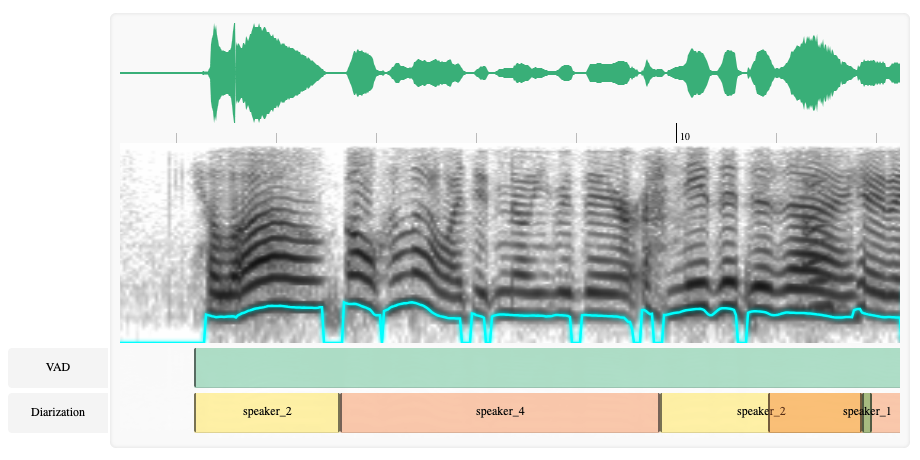
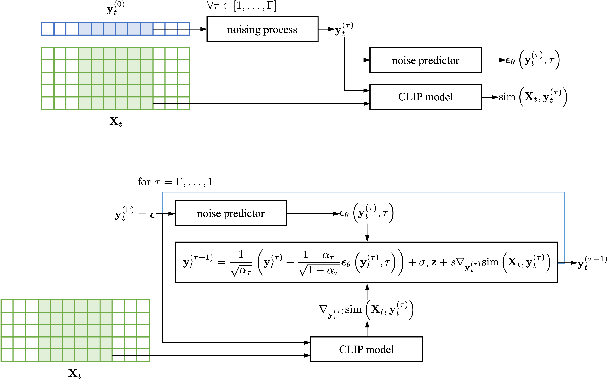
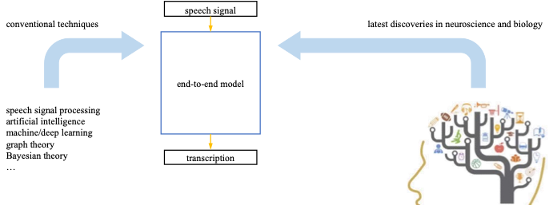

I am currently a Postdoctoral Fellow at the School of Electrical Engineering and Telecommunications, UNSW Sydney. My professional background spans both academia and industry. Prior to my PhD, I worked as a Researcher at the Radar and Electronic Equipment Research Institute, AVIC, Beijing, and as an Algorithm Engineer in the Ride-hailing Business Unit of Meituan, Beijing.
With a solid background in signal processing and machine learning, I have applied my expertise to a range of engineering problems. My recent research focuses on machine learning, (speech) signal processing, and sequence modeling.
PhD
Under supervision of A/Prof. Vidhyasaharan Sethu, Dr. Ting Dang, and A/Prof. Beena Ahmed
M.Eng.Sc. in Communication and Information Systems
Under supervision of Prof. Xin Wang
B.Eng. in Communication Engineering



For a more up-to-date list of publications, see Google Scholar.
AusKidTalk: developing transcription guidelines for continuous Australian English child speech
T. Szalay, Z. Nan, R. Huang, M. Shahin, T. Sirojan, K. Ballard, & B. Ahmed
Language Resources and Evaluation Conference (LREC), 2026
AusKidTalk: using strategic data collection and out-of-domain tools to semi-automate novel corpora annotation
T. Szalay, M. Shahin, T. Sirojan, Z. Nan, R. Huang, K. Ballard, & B. Ahmed
Interspeech, 2025
Underwater diver communication system based on speech/text conversion
Y. Rong, P. Chen, & Z. Nan
IEEE OCEANS, 2025
AusKidTalk: developing an orthographic annotation workflow for a speech corpus of Australian English-speaking children
T. O. Szalay, M. Shahin, T. Sirojan, Z. Nan, R. Huang, J. Arciuli, E. Baker, F. Cox, K. J. Ballard, & B. Ahmed
Available at SSRN 5020250
A joint spectro-temporal relational thinking based acoustic modeling framework
Z. Nan, T. Dang, V. Sethu, & B. Ahmed
ArXiv Preprint ArXiv:2409.15357
Variational connectionist temporal classification for order-preserving sequence modeling
Z. Nan, T. Dang, V. Sethu, & B. Ahmed
IEEE International Conference on Acoustics, Speech and Signal Processing (ICASSP), 2024
Improving wav2vec2-based spoken language identification by learning phonological features
M. Shahin, Z. Nan, V. Sethu, & B. Ahmed
INTERSPEECH, 2023
Weighted sum-throughput maximization for energy harvesting powered MIMO multi-access channels
Z. Nan & W. Li
ArXiv Preprint ArXiv:1709.09627
Cramer-Rao lower bounds of joint time delay and Doppler-stretch estimation with random stepped-frequency signals
Z. Nan, T. Zhao, & T. Huang
IEEE International Conference on Digital Signal Processing (DSP), 2016
Performance analysis of joint time delay and Doppler-stretch estimation with random stepped-frequency signals
T. Zhao, Z. Nan, & T. Huang
IEEE International Conference on Digital Signal Processing (DSP), 2016
Energy-efficient transmission schedule for delay-limited bursty data arrivals under nonideal circuit power consumption
Z. Nan, T. Chen, X. Wang, & W. Ni
IEEE Transactions on Vehicular Technology, 2015
Optimal MIMO broadcasting for energy harvesting transmitter with non-ideal circuit power consumption
X. Wang, Z. Nan, & T. Chen
IEEE Transactions on Wireless Communications, 2015
Optimal transmission policy for energy-harvesting powered MIMO multi-access channels
W. Li, Z. Nan, X. Wang, & X. Zhou
IEEE/CIC International Conference on Communications in China (ICCC), 2014
Energy-efficient transmission of delay-limited bursty data packets over time-varying channels under non-ideal circuit power
Z. Nan, T. Chen, X. Wang
IEEE China Summit & International Conference on Signal and Information Processing (ChinaSIP), 2014
Energy-efficient transmission of delay-limited bursty data packets under non-ideal circuit power consumption
Z. Nan, X. Wang, & W. Ni
IEEE International Conference on Communications (ICC), 2014
Optimal MIMO broadcasting for energy harvesting transmitter with non-ideal circuit power
X. Wang & Z. Nan
IEEE International Conference on Communications (ICC), 2014
Optimal MIMO broadcasting over time-varying wireless channels for energy harvesting transmitter with non-ideal circuit power
Z. Nan, T. Chen, & X. Wang
IEEE International Conference on Acoustics, Speech and Signal Processing (ICASSP), 2014
An optimization approach to energy-efficient transmissions with strict deadlines
X. Wang & Z. Nan
IEEE Wireless Communications and Networking Conference (WCNC), 2013
2026 T1 - Present
University of New South Wales
2026 T1 - Present
University of New South Wales
2026 T1 - Present
University of New South Wales
2026 T1 - Present
University of New South Wales
Research Thesis
ELEC4951, ELEC4955, ELEC4953
Masters Project
ELEC9451, ELEC9452, ELEC9453
Information Technology Project
COMP9900
School of Electrical Engineering and Telecommunications
Postdoctoral Fellow
Department of Linguistics
Research Assistant
School of Electrical Engineering and Telecommunications
PhD Student
Ride-Hailing Business Unit
Algorithm Engineer
Radar and Electronic Equipment Research Institute
Researcher
School of Information Science and Engineering
M.Eng.Sc. Student
School of Information and Electronics
B.Eng. Student
Second Prize in MERLIon CCS Challenge
INTERSPEECH, 2023
Australian Government Research Training Program (RTP) Scholarship
University of New South Wales, 2021
Project Star of Ride-Hailing Business Unit
Meituan, 2020
Second Prize of Fudan University Doctoral Forum
Fudan University, 2014